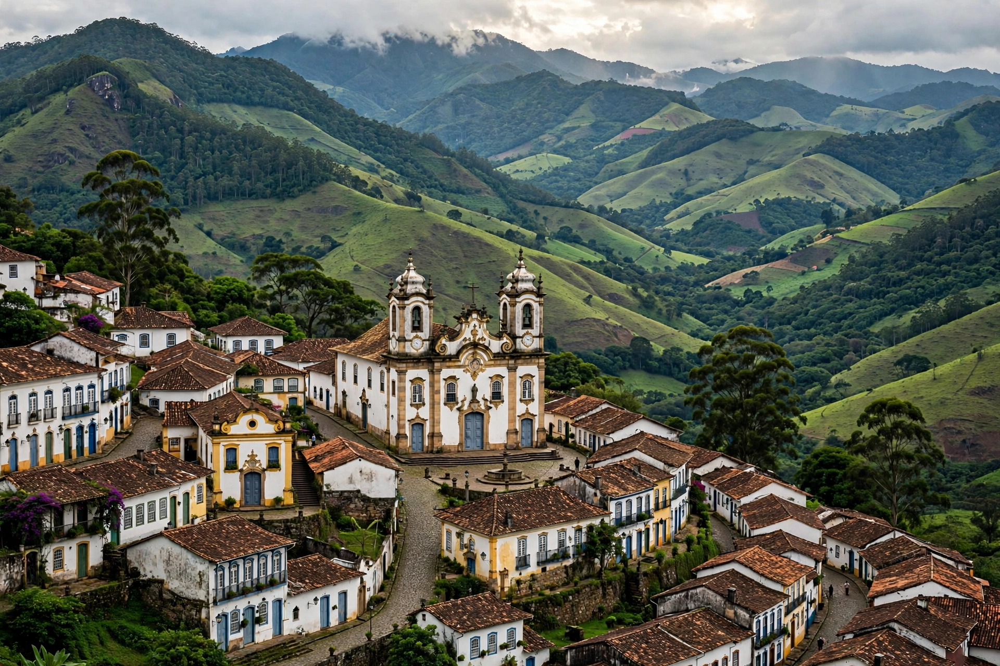

| Minas Gerais | |
 | |
| Country | Brazil |
|---|---|
| Capital | Belo Horizonte |
| Area | 586,522 km² (2nd largest state) |
| Population | about 20.5 million |
| Region | Southeast |
Minas Gerais (Portuguese for "General Mines") is one of the 26 states of Brazil, located in the southeastern region of the country. It is the second most populous Brazilian state and the fourth largest by area. Its capital and largest city is Belo Horizonte.
The state's history was transformed in the 1690s by the discovery of gold, which sparked Brazil's gold rush and founded mining towns such as Ouro Preto, Mariana and Tiradentes. Diamonds were later found near Diamantina. The wealth of the mines funded a flourishing of colonial baroque art and architecture, and discontent with Portuguese taxation produced the Inconfidência Mineira conspiracy of 1789, led by the martyr known as Tiradentes.
Minas Gerais is a landlocked state of mountains, plateaus and river valleys. The São Francisco River rises in its southwest, in the Serra da Canastra. The state borders Bahia, Goiás, Mato Grosso do Sul, São Paulo, Rio de Janeiro and Espírito Santo.
The state remains a mining powerhouse — iron ore and gold are major products — and is also Brazil's leading coffee producer, a centre of dairy farming (famous for its cheeses), and an industrial hub for steel and automobiles. It is also renowned for its production of cachaça.
Mineiro cuisine, including pão de queijo (cheese bread), feijão tropeiro and tutu de feijão, is celebrated across Brazil. The historic towns of Ouro Preto and Diamantina are UNESCO World Heritage Sites.